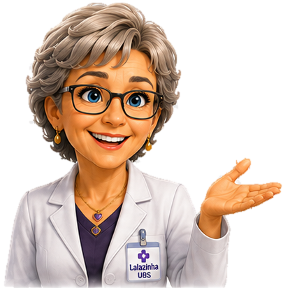

Assistente virtual
Respostas administrativas baseadas em informações institucionais revisadas e regras de segurança.
O AtendeUBS é uma plataforma independente em desenvolvimento e avaliação para apoiar a comunicação e os fluxos de atendimento de unidades e serviços.
Projeto desenvolvido e mantido por Alex Gabriel Pereira Avante.

Respostas administrativas baseadas em informações institucionais revisadas e regras de segurança.
Filas internas, histórico e continuidade do atendimento humano no mesmo ambiente.
Perfis de acesso, auditoria e limites explícitos para impedir orientação clínica automatizada.
O projeto não representa, por si só, órgão público, entidade governamental ou instituição de saúde. Sua adoção por qualquer organização depende de avaliação e formalização próprias.